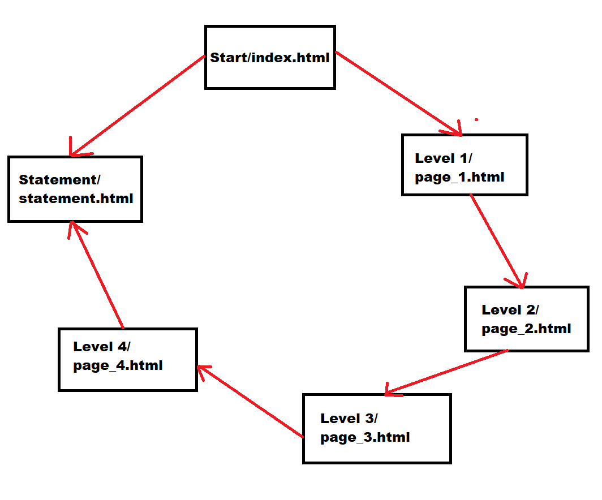

1. Title:
Of Life
2.
Choice for column 1: Make a website that is kind of a game
Choice for column 2: 4a (1): an act, way, or manner of proceeding
Choice for column 3: Bogost - Ian Bogost's chapter, "The Rhetoric of Video Games"
Choice for column 4: JavaScript-Oriented
3. Articulate your concepts.
The topic of my game Of Life is to start from Level 0 and progress through each level while also exploring the levels which affect the outcome at the end. The location in the game is a space-like dungeon. Each level in this dungeon is supposed to mimic each stage of your life, and as life gets harder as your age, the levels in this game also increase in difficulty. Progression is done through solving puzzles in rooms. The theme of my game is how when a person progresses through life, things and situations get progressively harder for him, and my game is going to similar in that there will be levels and each level is going to have its own difficulty level. The levels are going to get progressively harder and the player will be put in more difficult situations. Hard times do not last forever, and when the game ends is when the hard times end, similar to how hardwork force the hard times to end in real life.The genre of my game will be the Metroidvania genre. So the approach I am taking is that the difficulty of the puzzles increases with each level that progresses. There are alternate outcomes when proceeding to the next room, and the outcome that is selected is dependent on the degree of exploration done by the player. The game finishes after a boss is defeated at the end.
4a. List file names of the pages that add to the total count of pages using JavaScript
index.html, page_1.html, page_2.html, page_3.html, page_4.html, page_bonus-level.html
4b. List the file names of page(s) demonstrating the different A2 JavaScript Categories
page_1.html, page_2.html, page_3.html, page_4.html
5. Sitemap Diagram

6. Credit to sources
"The tranquility effect of outer space" by Tymphony is licensed under CC BY-SA 3.0 

 .
.
"Sun 2011-12-08" by Michael Karrer is licensed under CC BY-NC 2.0  .
.
"Earth - Global Elevation Model with Satellite Imagery" by Kevin M. Gill is licensed under CC BY 2.0 .
"False Color View of Mercury" by NASA Goddard Photo and Video is licensed under CC BY 2.0 .
"Astronaut" by Sharon Drummond is licensed under CC BY-NC-SA 2.0 .
"Crab nebula movie" by dgoodin is licensed under CC BY-NC-ND 2.0  .
.
"Soyuz approaching International Space Station" by Astro_Alex is licensed under CC BY-NC-SA 2.0 .
"GOES-16" by Ryan Howerter is licensed under CC BY-NC-SA 2.0 .
"Alien Hybrid" by Steam Pirate is licensed under CC BY 2.0 .
"Spaceship" by Marxchivist is licensed under CC BY 2.0 .
"Zelda treasure chest 2" by themodelmaker is licensed under CC BY-NC-SA 2.0 .
"Minecraft Diamond Sword" by Niq Scott is licensed under CC BY-NC-ND 2.0 .
"music game, win or high score.wav" by xtrgamr is licensed under CC BY 4.0 .
"Empty Spaces" by Backnbloom is licensed under CC BY-SA 3.0 .
"NASA's OSIRIS-REx Spacecraft Arrives at Asteroid Bennu" by NASA's Marshall Space Flight Center is licensed under CC BY-NC 2.0 .